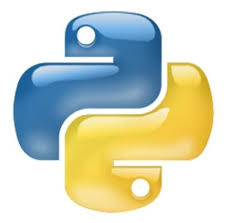
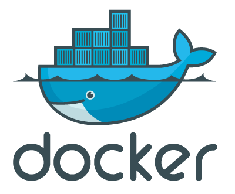

Celestial
provisioning server
Created by Ronen Narkis / @narkisr
We use Puppet/Chef for configuration managment
We deploy our code using Capistrano/Fabric

We run against EC2/VMware/...
 |
 |
 |
- Have an API and UI
- Allow users to self service
- Create systems automatically (nightly, auto-scaling)
- Support multiple platforms transparently
- Have a process not just another tool
- Minimize manual bookeeping
Now we need to
Enter Celestial

Basic model
- System - Machine and hypervisor properties
- Type - The system function and provisioning info
System
{
:env :dev
:machine {
:hostname "red1" :user "ubuntu" :os :ubuntu-12.10
}
:aws {
:instance-type "t1.micro"
:image-id "ami-64636a10"
:key-name "Uranus"
:endpoint "ec2.eu-west-1.amazonaws.com"
}
:type "redis"
}
Type
{
:puppet-std {
:module {
:name "redis-sandbox-0.3.4"
:src "http://dl.bintray.com/content/narkisr/boxes/redis-sandbox-0.3.4.tar.gz"
}
:args []
}
:type "redis"
:classes {:redis {:append true}}
}
Feature rundown
Staging as scale
- Full lifecycle mgmt (CPDD).
- Distributed locking
- Central logging
- Network management
- Multiple environemts
Hypervisors
- AWS: AMI, EBS, Elastic ip, regions, setting hostname
- vCenter: Templates, allocation, network setup, cluster
- Proxmox: Containers, bridging, allocation, cluster
- Docker: Containers, allocation, cluster
- All: automatic DNS registration, static ip assigning
Provisioning/Deployment
- Standalone puppet
- Chef (soon)
- Capistrano/Fabric
Web UI
- Single page Webui (Angularjs)
- Systems/Types listing
- Actions/Jobs invocation
- Live Job tracking
API
- Swagger (full api live doc)
- REST/JSON
- Nodejs client (Hubot)
Environments
- QA/Dev/Prod separation
- Each can have multiple Hypervisors
- We can limit user access to one
User management
- Roles
- Quotas
- Environment locking
Hubot
- Full CPDD
- Listing of actions/systems etc..
- Notifications on events
- Template support
Logging
- Kibana/Graylog
- Transaction id tracking
- Any API access is logged
- Direct linking from Webui (soon)
Components
- Single JVM process for Celestial.
- Redis: job queue, locks, model.
- Hardware (core duo 1 1.5 Ram worked fine ;))
- Easy to deploy and manage
Deployment
- Puppet module
- Vagrant box
- Docker (soon)
Implementation
Code
- 3834 lines of Clojure code
- Extensible, Vm, Provsioner, Remoter interfaces
- Polymorphic workflow sequences
Puny
(require '[puny.core :as p])
(p/entity foo)
(defn validate-foo [foo] {})
(let [id (add-foo {:bar 1})]
(get-foo id) ;=> {:bar 1}
(foo-exists? id) ;=> truthy
(update-foo id {:bar 2})
(get-foo id) ;=> {:bar 2}
(delete-foo id)
(foo-exists? id) ;=> falsey
)
Swag
(defmodel action
:operates-on :string :src :string :actions {:type "Actions"})
(defroutes- actions
{:path "/actions" :description "Adhoc actions managment"}
; using custom action model
(POST- "/action" [& ^:action action]
{:nickname "addActions" :summary "Adds an actions set"}
{:status 200 :body (str "got action " action)}))
Supernal (tasks)
(ns- deploy
(task update-code
(let [{:keys [src app-name run-id]} args]
(debug "updating code on" remote)
(copy src (releases app-name run-id))))
(task post-update ...)
(task start ...)
(task symlink ...)
(task stop ...)
(task pre-update ...))
Supernal (graphs)
(lifecycle base-deploy
{deploy/update-code #{deploy/post-update deploy/symlink}
deploy/stop #{deploy/update-code}
deploy/pre-update #{deploy/update-code}
deploy/symlink #{deploy/start}
deploy/post-update #{deploy/start}
deploy/start #{}})
Demo!
Future
- Dynamic hypervisors (Docker).
- Resource usage tracking.
- Zeromq remoting.
- Modeling clusters (services).
Summary
- Celestial is moving fast
- Already functional
- To be released publicly soon ;)